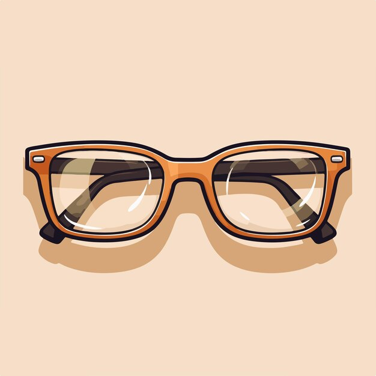

3D-Sehanalyse
Detaillierte Messungen für komfortables Sehen bei Tageslicht, Bildschirmarbeit und Autofahrten.
Unser Team kombiniert moderne Optometrie mit persönlicher Stilberatung. Ob Schnellcheck oder intensive Analyse – wir gestalten Ihr Seherlebnis durchdacht, präzise und angenehm.

Detaillierte Messungen für komfortables Sehen bei Tageslicht, Bildschirmarbeit und Autofahrten.

Früherkennung von Sehveränderungen inklusive sanfter Druckmessung und detaillierter Auswertung.

Individuelle Anpassung, Probetragen und Pflegeberatung – inklusive Abo-Modelle für Stammkunden.

Brillen, die zu Ihrem Stil passen. Wir analysieren Proportionen, Hautton und Outfit-Favoriten.

Express-Reparaturen, Justierung und professionelle Ultraschallreinigung direkt vor Ort.

Spielerische Messung, robuste Fassungen und Tipps für gute Sehgewohnheiten im Schulalltag.

Erweiterte Garantie auf Fassungen und Gläser – inklusive Nachjustierung und jährlicher Sichtprüfung.
Schutz bei Bruch, Verlust oder Beschädigung. Schneller Ersatz und transparente Bedingungen.
Online oder telefonisch: Wir reservieren ausreichend Zeit, damit Sie in Ruhe auswählen können. Ab 18 Uhr bieten wir auch After-Work-Termine an.